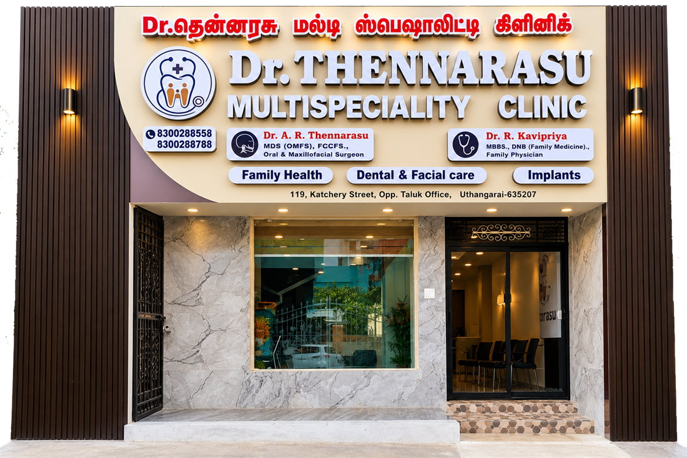

Dr. Thennarasu
MDS (OMFS), FCCFS, FFA, MFI
Cleft and Craniofacial Surgeon
Dr. Thennarasu provides specialist consultation for conditions affecting the mouth, teeth, jaws and facial structures, within his clinical scope.
1st Cleft and Craniofacial Surgeon in Krishnagiri District. 1st Family Physician in Krishnagiri District.
Your Trusted Healthcare Destination in Uthangarai
From everyday family healthcare to specialised oral, jaw and facial care, Dr. Thennarasu Multispeciality Clinic brings together compassionate consultations and professional medical expertise for you and your family.
At Dr. Thennarasu Multispeciality Clinic, our focus is on making healthcare more accessible to individuals and families in Uthangarai and surrounding communities.
Our clinic brings together specialist oral and maxillofacial consultations with Dr. Thennarasu and family physician consultations with Dr. R. Kavipriya — from oral, jaw and facial conditions requiring specialist assessment to everyday health concerns and preventive care.
Our tagline: Caring Across Generations
MDS (OMFS), FCCFS, FFA, MFI
Cleft and Craniofacial Surgeon
Dr. Thennarasu provides specialist consultation for conditions affecting the mouth, teeth, jaws and facial structures, within his clinical scope.
MBBS, DNB (Family Medicine)
Family Physician
Dr. R. Kavipriya provides family physician consultations at the clinic, supporting patients with general health concerns, preventive care and appropriate medical assessment.
Dr. Thennarasu Multispeciality Clinic brings together family healthcare, preventive care, specialist cleft and craniofacial surgery, and dental care. Open any card to see the conditions and services it covers.
Consultations for common illnesses, new symptoms and everyday health concerns. The doctor reviews your symptoms, medical history and relevant examination findings to decide on suitable care, follow-up or further investigation.
Many health problems develop quietly before symptoms appear. Periodic check-ups help identify risks early, with personalised advice based on your age, medical history, family history and lifestyle.
Ongoing care for long-term conditions. Each visit can include a review of symptoms, monitoring, lifestyle guidance and medication, with coordination with specialists when needed.
General consultations for women's reproductive, hormonal and preventive health concerns. These are family-medicine consultations: where specialist obstetric or gynaecological care is needed, the doctor will advise on appropriate referral.
Consultations for babies, children and teenagers, covering common illnesses, nutrition, growth and development, and age-appropriate preventive care.
Healthcare for older adults, looking at the whole person: multiple medical conditions, medicines, mobility, memory, independence and quality of life.
A respectful, confidential setting to talk about emotional wellbeing, stress, sleep and other mental health concerns, with referral to specialist services when needed.
Assessment of common skin, hair and nail concerns, with guidance on treatment, skin care, further evaluation or referral to a dermatologist.
Assessment of joint pain, muscle discomfort and movement difficulties, with advice on pain relief, exercise, further investigation or referral.
Vaccines help prevent a number of serious infectious diseases. The doctor can advise on age-appropriate immunisation for children and adults. Please call the clinic to check which vaccines are currently available.
A clinical assessment, supported by suitable investigations, helps explain symptoms, identify risk factors and monitor ongoing conditions. Tests not available at the clinic can be arranged through appropriate external facilities.
Some outpatient procedures can be carried out when clinically appropriate and when the equipment, trained staff and facilities are in place. The doctor will advise whether a procedure can be done at the clinic or needs referral.
Certificates are issued only after an appropriate clinical evaluation and depend on the purpose of the document and any applicable requirements. Please bring any forms or guidelines you have been given.
Some patients find it hard to travel to the clinic because of age, illness or limited mobility. Home-based medical support may be possible, depending on staffing, service area and arrangements. Please call to enquire.
Some symptoms need prompt assessment because they can become serious quickly. The clinic is not a hospital emergency department; the emergency equipment and support available should be confirmed with the clinic.
Specialist assessment and treatment planning for cleft lip, cleft palate and other congenital differences of the face and skull.
A cleft lip or palate can affect feeding, speech, hearing, dental development and appearance. Care is usually planned in stages from infancy into the teenage years. Consultation helps families understand the condition, the timing of possible surgery, and the support that may be needed from speech, dental, orthodontic and other specialists.
Older children and adults with a previously repaired cleft, or with other craniofacial structural conditions, can also be assessed for functional or structural concerns and the need for further specialist care.
Specialist assessment of facial structural concerns, selected facial deformities and reconstruction needs after injury or other conditions.
Reconstructive needs may follow an accident, the removal of a growth or lesion, a burn, or a condition present from birth. The consultation looks at the affected area, how it affects function and appearance, and the patient's general health.
Where surgery may help, the possible options, their expected recovery, and their benefits and risks are discussed openly. Results vary from person to person, and no specific outcome can be guaranteed.
Facial trauma consultation for suspected fractures of the facial bones, jaw injuries, facial swelling and related injuries.
Road accidents, falls, sports and assaults can injure the jaw, cheekbones, eye socket or nose. Signs that need assessment include a change in how the teeth meet, difficulty opening the mouth, numbness of the face, double vision, or swelling and bruising that does not settle.
Assessment focuses on how severe the injury is, which imaging is appropriate, and whether specialist treatment can be planned or an emergency hospital referral is needed. Serious head injury, heavy bleeding or breathing difficulty needs emergency care straight away.
Assessment of jaw alignment problems, structural jaw deformities and skeletal differences that affect the bite or the balance of the face.
When the upper and lower jaws do not grow in proportion, it can lead to an underbite, an overbite, an open bite or facial asymmetry. This can affect chewing, speech, breathing and appearance.
Specialist evaluation includes examination of the bite and facial profile and, where needed, imaging. Suitable options are then discussed, which may include orthodontic treatment, corrective jaw (orthognathic) surgery, or a combination planned together with an orthodontist.
Consultation for jaw-joint problems such as pain, clicking, stiffness, locking and difficulty opening the mouth.
The temporomandibular joint (TMJ) connects the lower jaw to the skull just in front of the ear. Problems can come from muscle strain, teeth grinding, injury, arthritis or changes inside the joint, and may cause earache, headaches or pain while chewing.
Assessment helps identify the likely cause and the appropriate next steps, which may range from simple self-care and jaw exercises to further investigation and specialist treatment.
Assessment of lumps, cysts, persistent sores, unusual growths and other abnormalities of the mouth and jaw.
Have it examined promptly if you notice any of the following: a mouth ulcer that has not healed within two weeks, a white or red patch, a lump or thickening, a swelling of the jaw, loose teeth without a clear cause, or numbness of the lip or tongue. The risk is higher in people who use tobacco, paan or areca nut, or drink alcohol.
Many lesions turn out to be harmless, but timely examination matters. When indicated, further investigation such as a biopsy or imaging will be advised, along with treatment planning or referral.
Specialist assessment of recurring facial pain, including pain that may be linked to nerve conditions such as trigeminal neuralgia.
Trigeminal neuralgia typically causes sudden, severe, electric-shock-like pain on one side of the face. It can be triggered by touching the face, chewing, brushing the teeth or a cool breeze. Facial pain can also come from the teeth, sinuses, jaw joint or muscles, so the cause is not always obvious.
A careful evaluation helps identify the source of the pain and plan further care, which may include medicines, further investigations, or referral to a neurologist or other specialist.
Clinical assessment of facial asymmetry, suspected structural abnormalities and selected craniofacial conditions.
Some patients come with a concern that one side of the face looks different, a change in facial shape over time, or a structural difference noticed in a child. The assessment looks at facial proportions, the bite, the jaws and related function.
Where clinically necessary, imaging or other investigations may be recommended or arranged. The findings are explained clearly, together with whether monitoring, treatment or a multidisciplinary referral is the right next step.
Dental consultation and oral examination for toothache, sensitivity, gum concerns and other oral-health complaints.
Common reasons for a visit include tooth pain, sensitivity to hot or cold, bleeding or swollen gums, bad breath, a broken or chipped tooth, and mouth ulcers. The examination covers the teeth, gums and soft tissues of the mouth, with dental X-rays advised when needed.
The findings help decide on suitable treatment options, or whether a referral for specialist dental care is needed.
Assessment of impacted or partially erupted wisdom teeth that cause pain, swelling or repeated gum infection.
Wisdom teeth often lack space to come through fully. This can lead to pain at the back of the jaw, swollen gums, difficulty opening the mouth, food trapping or decay in the neighbouring tooth.
The specialist examines the tooth and advises on imaging to see its position and its relationship to nearby nerves. Based on the findings, you will be advised whether monitoring, further investigation, extraction or surgical removal is most appropriate.
Consultation for missing teeth and assessment of whether dental implants are a suitable option.
A dental implant is a small post placed in the jawbone to support a replacement tooth, bridge or denture. Not everyone is a suitable candidate straight away.
The evaluation considers the health of the gums and remaining teeth, the amount and quality of jawbone, general medical history (such as diabetes or smoking), and your individual needs. The possible options, stages, timelines and alternatives are explained before any treatment decision.
Specialist consultation for conditions of the teeth, mouth and jaws that may need oral surgery.
Some dental and jaw problems cannot be managed with routine dental treatment alone, for example teeth that are difficult to remove, infections or swellings around the jaw, or abnormal tissue that needs a closer look.
The consultation involves a detailed examination, a review of your medical history and suitable imaging, followed by a clear explanation of whether surgery is advisable, what it would involve, and how recovery is planned.
Regular oral examinations and hygiene guidance to keep teeth and gums healthy and to catch problems early.
Tooth decay and gum disease often start without pain. A routine check helps spot early signs, and practical advice on brushing, flossing, diet and tobacco use can help prevent them from getting worse.
Early assessment also helps patients understand their oral-health needs and recognise when specialist treatment is advisable, such as for a persistent ulcer, a jaw swelling or a tooth that may need surgical care.
Family physician consultations and specialist oral and maxillofacial care under one clinic identity.
Meet Dr. Thennarasu, MDS (OMFS), FCCFS, FFA, MFI, and Dr. R. Kavipriya, MBBS, DNB (Family Medicine).
9:00 AM – 9:00 PM, every day.
Located at 119, Katchery Street, opposite the Taluk Office, Uthangarai – 635207.
Call the clinic to enquire about available treatments, consultation schedules and directions.
Clean, comfortable and thoughtfully designed spaces where every patient feels welcome, from our reception and consultation room to the fully equipped dental suite.
Looking for a family physician or oral and maxillofacial surgeon in Uthangarai? We welcome enquiries from patients seeking family healthcare, dental care and specialist consultation.